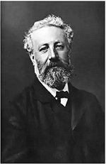
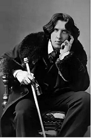

Julio Verne
Tirone José González Orama (Caracas, 11 de marzo de 1988-Maracay, fue un rapero, poeta, compositor y Activista social venezolano, hijo de José Rafael González y Leticia Coromoto Orama.
La alta calidad de las letras de sus obras destaca por el mensaje de evolución de conciencias20 de enero de 2015). El género de sus canciones va en torno al rap entre los que están rap rock, jazz rap, rap conciencia, Rap Underground, Hardcore hip hop.
Trabajó como analista de reclamos en una empresa en Maracay y también en el Instituto Universitario Experimental de Tecnología de La victoria. Estudió Derecho y Ciencias Políticas en la Universidad Bicentenaria de Aragua, pero decidió dejar la carrera para enfocarse en la música.
Tempo
David Sánchez Badillo (Ponce, 25 de septiembre de 1977), conocido por su nombre artístico Tempo, es un cantante puertorriqueño de rap, trap y reguetón. Discográficas: Nuvo Records (1996), Wise Selection (1997), Playground Records (1997-2002), Buddha´s Family (1998-2005), Sony BMG (2001, 2009-presente), Free Tempo LLC (2005-2011) y Free Music Inc. (2013-presente). Lanzó un mixtape llamado Free Music, con colaboraciones de Daddy Yankee, Ñengo Flow, J Álvarez, Farruko, Arcángel, Jory, De la Getto, Wisin, polaco, entre otros. Tuvo quizá su guerra lírica más controvertida, enfrentándose al excantante de Calle 13, Residente. La rivalidad se resolvió en septiembre, cuando ambos se unieron para asistir a los habitantes de la localidad La Perla, tras el paso del Huracán María. En 2018, lanzó su cuarto álbum de estudio, Back To The Game, que contó con colaboraciones de Ñengo Flow, Randy, Cosculluela, entre otros.
Canserbero
Jules Gabriel Verne, conocido en los países Hispanohablantes como Julio Verne (Nantes, 8 de febrero de 1828-Amiens, 24 de marzo de 1905), fue un escritor, poeta y dramaturgo francés célebre por sus novelas de aventuras y por su profunda influencia en el género literario de la ciencia ficción. Su conyugue Fue Honorine Hebe du Fraysse de Viane, sus hijos Michel, Valentine (hijastra) y Suzanne (hijastra). Se educo en Lycée Georges-Clemenceau (Retórica y Filosofía; 1844-1846) Se enfoco en temas de ciencia ficción y aventuras sus obras más conocidas son Veinte mil leguas de viaje submarino, Viaje al centro de la tierra, la vuelta al mundo en 80 días, la isla misteriosa, cinco semanas en globo y Miguel Strrgoff.
Oscar Wilde
Su nombre de Nacimiento es Oscar Fingal O´Flahertie Wills Wilde nació el 16 de octubre de 1854 en Dublin, Irlanda, Reino Unido, falleció el 30 de noviembre de 1900 a los 46 años de edad en Paris Francia. Sus padres son William Wilde y Jane Wilde, tuvo 2 hijos llamados Cvril Holland y Vyvyan Holland se educó en Trinity College, Dublin, Magdalen College (Oxford). Escritor de cuentos, dramaturgo y época durante la época victoriana, los géneros que trabajo fueron comedia, literatura gótica, poesía, drama, tragedia, cuento de hadas, narrativa poética, novela, cuento y ensayo. Las obras más notables son: El retrato de Dorian Gray, La importancia de llamarse Ernesto, El príncipe Feliz y otros cuentos, Balada de la cárcel de Reading, De profundis, El crimen de lord Arthur Savile y otras historias, una casa de granadas y otros Obtuvo premio Newdigate (1878) por su poema «Ravenna»